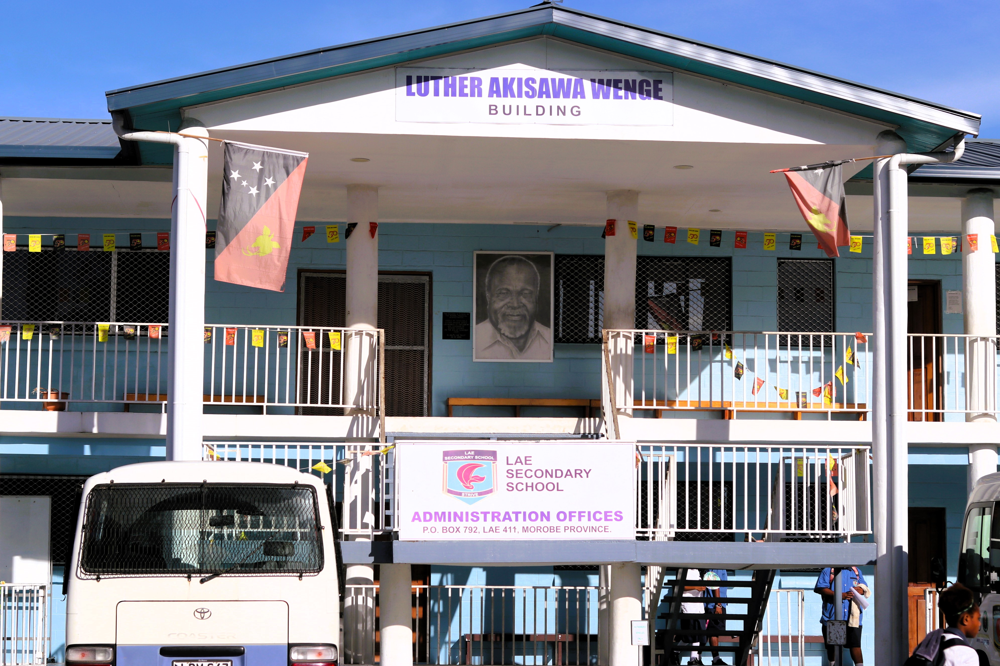

Administration Buildings and New Facilities
Exterior views of administration buildings and newly developed school facilities.

Teachers’ Residences
Approved exterior views of staff residential accommodation and surrounding areas.
School Fencing
Perimeter fencing and boundary features, photographed without exposing security-sensitive details.
Playground
Outdoor recreation spaces available for student recreation and supervised activities.
School Canteen
Dining and refreshment area, including suitable wide views of the facility.
Students’ Hall
Hall interior and exterior views for gatherings, activities and school functions.
Arts Room
Creative learning space, materials and student artwork displayed with permission.
2. Teaching, Classrooms & Learning Resources
Capture everyday learning environments and the resources that support lessons, reading, practical work and distance or flexible learning.
Students Learning in Classrooms
Classroom learning scenes, lesson activities and teacher-student engagement.
Classroom Facilities
Furniture, boards, teaching equipment, layout and other classroom features.
School Library
General library views showing the reading environment and available resources.
Library Sections
Separate views of library sections, shelves, reading areas and learning materials.
Students Reading in the Library
Reading and independent study moments, subject to student photo permissions.
DODL Lae Secondary School
Approved photographs of the DODL learning area, resources or related activities.
3. Science, ICT, Robotics & Innovation
Bring together practical science environments, digital learning facilities, robotics equipment and demonstrations of student or teacher projects.
Science Laboratory
General views of the science laboratory and its learning environment.
Sections of the Science Laboratory
Specific laboratory areas, equipment and practical learning stations.
ICT Facility
Digital learning facilities and suitable equipment views; avoid exposing passwords or network details.
ICT
Computer room views and approved examples of technology-supported learning.
Robotics Laboratory & Facilities
Robotics workspaces, equipment and learning resources in the school’s robotics facilities.
Teacher Project Demonstration
Teacher-led demonstrations of practical projects, models or learning activities.
Project Demonstrations & Models
Additional project demonstration images from the separately supplied demonstration folders.
Teacher Demonstration — Additional Set
A separate placeholder for the third teacher-demonstration folder listed in the supplied photo directory.
4. Staff, Leadership & Professional Collaboration
Present staff members and professional activities respectfully, using accurate captions and only approved images of identifiable people.
Group of LSS Teachers
Approved group photographs of teachers and staff members.
Principal’s Office
Suitable views of the principal’s office and leadership workspace.
Staff Room
Shared staff space and professional collaboration environment.
Staff Meetings
Approved images of staff meetings, planning discussions and professional collaboration.
Teachers Having a Meeting
Additional meeting photographs, selected to avoid displaying confidential documents.
5. Student Life, Community & Practical Activities
Document student participation, shared responsibilities, practical learning, school gatherings and community-building activities.
Students’ Clean-Up
School clean-up activities that demonstrate care for shared spaces and the campus environment.
Agriculture Practical Activities
Hands-on agricultural learning, garden work and practical subject activities.
Students During Lunch Time
Everyday student life in designated lunch areas, with privacy-conscious framing.
Students in the Assembly Ground
Wide views of student gatherings and the assembly ground during approved activities.
Inter-School Exhibition
Displays, exhibits and approved participation in inter-school learning activities.
6. Sports, Cultural Performance & School Events
Celebrate school spirit, athletic participation, cultural expression and milestone occasions through well-captioned event photographs.
Sports Day & School Carnival
Sports-day highlights, team participation and school carnival activities.
Sports Facilities
Sports grounds and facilities used for physical education and organised activities.
Cultural Performance
Approved photographs of cultural performances and celebrations of community identity.
Graduation Day
Graduation ceremony highlights and milestone moments, published with appropriate authorisation.
7. Student Welfare, Health & Sanitation Facilities
Show appropriate, general views of facilities that contribute to a safe, supportive and hygienic school environment.
School Clinic
General views of the clinic facility. Do not publish identifiable patient information or medical records.
Students’ Toilet Facilities
Appropriate exterior or unoccupied facility views that respect student dignity and privacy.
Staff Toilet Facilities
General facility views for documentation, avoiding people and private interior use.
8. Administration, Planning & School Operations
Group administrative workspaces and planning environments separately from public-facing learning and student activity photographs.
Administration Archives
Use only approved, non-confidential views; ensure records, names and personal information are not readable.
Administration Planning Board
Approved planning workspace views with confidential schedules, names or internal notes obscured.
Sections of a Classroom
Different classroom sections and learning-space arrangements, organised as a facilities reference.
Publishing and image-management note: The cards are structured placeholders based on the supplied folder names, not actual photographs or verified records. Replace them with the corresponding approved images. Confirm captions, dates and event details before publishing. Obtain appropriate consent for identifiable students and staff, and never publish private, confidential or security-sensitive information. Keep source folders and image filenames organised so future updates remain consistent.